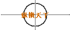
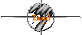
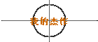

  
Zmud 这个泥巴专用客户端可以说是泥虫的必备工具软件。它拥有大量的函数和命令所以能做高级的机器人提玩家进行令人厌烦的练功，完成任务；能记录泥潭中的地图信息；能方便玩家的输入输出操作，还能自己控制显示的字体和颜色……唯一美中不足的就是它会自觉不自觉的偷偷记录下你的 ID 和 密码 ，容易被别人盗用你的人……但是只要自己小心，还是可以避免的说。
关于机器人编程，Java@SMTH是这方面我所知道的人中的高手，有问题去问他吧！^_^